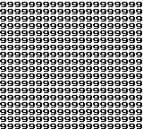

AreaDexJP/Y:254
Please note that this glitch only exists in the Japanese versions of the game, or is otherwise a glitch |
| Town Map name: (Unknown, likely too long)  Identifier (HEX) FE Identifier (DEC) 254 Default track Unknown Tileset Unknown Size Unknown Map type Redirection glitch map
|
Map 0xFE from Japanese Pokémon Yellow is a redirection glitch map with an index number of 254 (FE) and the equivalent of Map FE from English, French, German, Italian and Spanish Yellow.
It can be accessed through the modification of D2E4, which is possible by changing item 34 in the expanded items pack into a TM54.
Due to this map's level-script pointer being at DC0E, this glitch map can be accessed without a freeze when the data (executed as Game Boy ASM) at DC0E is safe, but will trigger a message that the Safari Zone game is over if the number of Safari Zone steps left in memory is zero, send the player to the Safari Zone and lock up the game.
However, if the map is accessed immediately after choosing to end a Safari Zone game with remaining steps left, it may warp the player to a fully black area of map 0x99 (a house in Fuchsia City) with the controls locked up, forcing the player to reset the game.
Attempting to view the Town Map name of map FE without visiting it (through the modification of map number address D2DD) will likely cause the game to fill the screen with 9s and freeze.
Map FE causing the PA to announce a Safari Game is over.